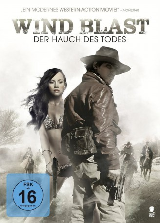

#3046 Wind Blast - Der Hauch des Todes
Alternativ: Wind Blast (Englischer Titel)
 
 IMDB-Wertung: 5.2 / 10
IMDB-Wertung: 5.2 / 10  Metascore: 0
Metascore: 0 
Ein Ermittler wird in die Wüste Gobi geschickt: Dort soll sich ein Auftragskiller versteckt halten, um dem Zugriff von Gesetz und Kopfgeldjägern zu entgehen. Tatsächlich gelingt es den Gesetzeshütern, die schwangere Verlobte des Killers aufzuspüren und in ihre Gewalt zu bringen. Der Killer selbst fällt Kopfgeldjägern in die Hände, die noch ein Hühnchen mit ihm zu rupfen haben. Sie wollen ein Foto in ihren Besitz bringen, wobei der Killer helfen soll. Das will er aber nur tun, wenn er seine Verlobte in Sicherheit weiß.
Jahr: 2010
Dauer: 118 Minuten
FSK: 16
Land: China Studio: Sunfilm EntertainmentTonspuren: DTS - ,
Untertitel:
Auflösung: 1080p (1920x816) Größe: 8376 MB
Genre: Action
Regisseur: Qunshu Gao
Drehbuch: Qunshu Gao
Soundtrack: Dong An, Jae-kwon Han
Darsteller:
 Jing Wu als Yang Xiaoming
Jing Wu als Yang Xiaoming Charlie Yeung als Sun Jing
Charlie Yeung als Sun Jing Nan Yu als A Nuo
Nan Yu als A Nuo- Yihong Duan als Xiang Xi
- Zhang Li als Han Chaodong
- Guowei Ma als Bureau chief
- Francis Ng als Mai Gao
- Dahong Ni als He Jianzhong
- Wang Wei als
- Yu Xia als Zhang Ning
- Yibai Zhang als Assassinated man
Datei: X:\HD-Eastern-Modern(N-Z)\Wind Blast - Der Hauch des Todes (2010, FSK16, 1920x816).mkv seit 19.01.2016
Festplatte: HD Eastern+Western
 Es gibt insgesamt 76 Filme in der Gruppe 'HD-Eastern-Modern(N-Z)'
Es gibt insgesamt 76 Filme in der Gruppe 'HD-Eastern-Modern(N-Z)'